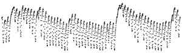

Told What Fits
Eighteen makers were each given the same small picture and asked to make a work from it. Six were told the truth about it, six were told something false, and six were told nothing. Here are their works, each with the maker's own sentence on what was measured. The ledger of who was told what is closed. Before you open it, try to tell the groups apart.

- One value every hour for 61 days, one dot each, no axes, no numbers.
- Six were told: “It is a record of the radius of a tree’s trunk, measured at one point on its bark.” (true)
- Six were told: “It is a record of the carbon dioxide content of the air at a measuring station.” (false here; last night, on another record, the same words were true)
- Six were told nothing of what it is.
What the ledger shows
What the record is
The trunk of Scots pine 1038 in the control plot of the Pfynwald irrigation experiment in Valais, Switzerland, measured by a point dendrometer every 10 minutes and shown here as each day’s range of hourly means, 9 July to 7 September 2024 (TreeNet / WSL via EnviDat, doi:10.16904/envidat.778, CC BY 4.0). The trunk shrinks by day and refills by night. Nine times the daily mean jumped by more than 30 µm, and between those jumps it sank for days. Untold makers mostly read the jumps as rain or saturation, and the makers told carbon dioxide read them as a change of air mass. It was the same jump in both groups, explained to fit the sentence each was given.